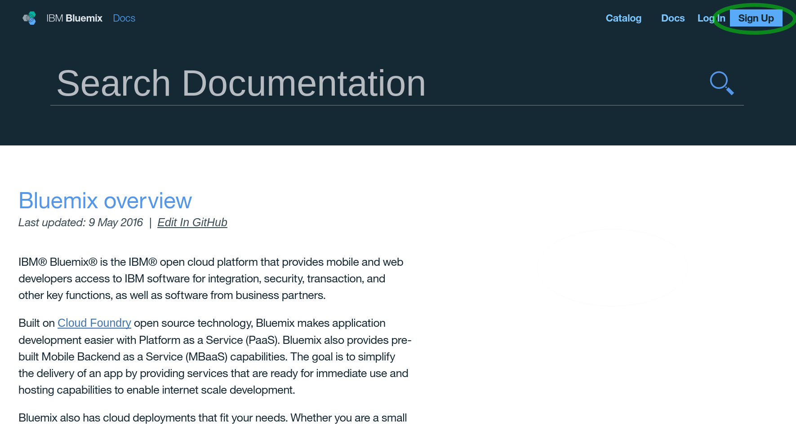
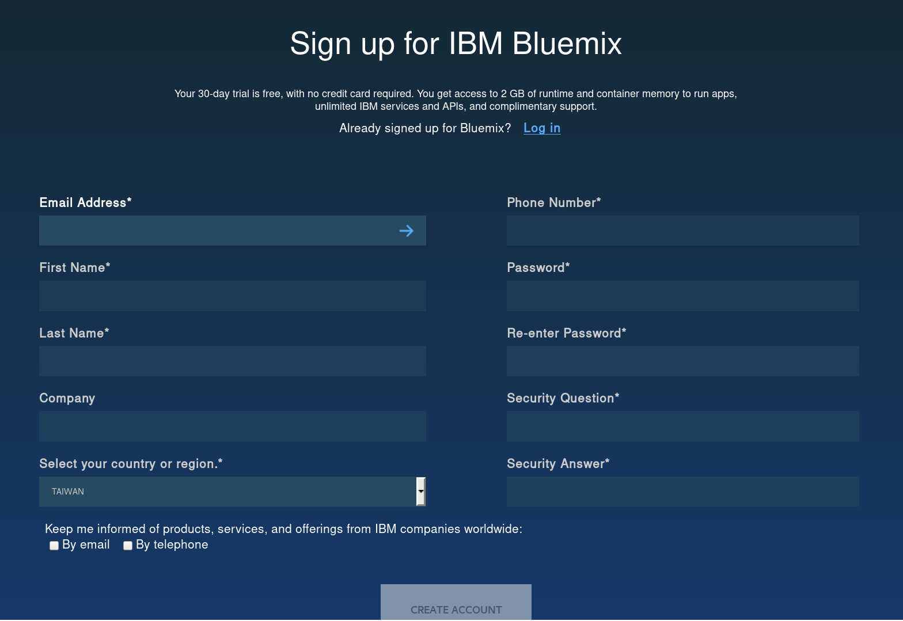
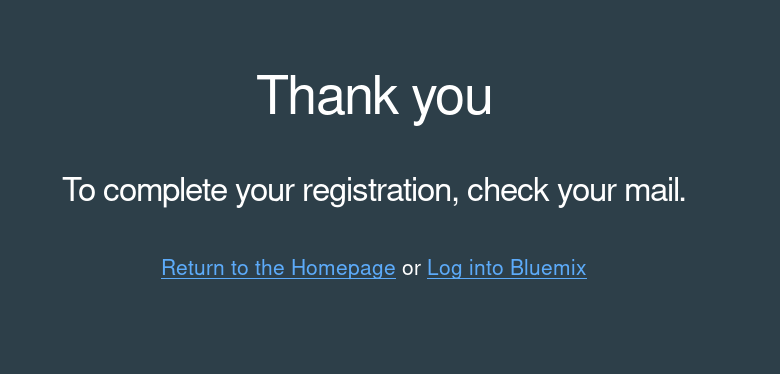
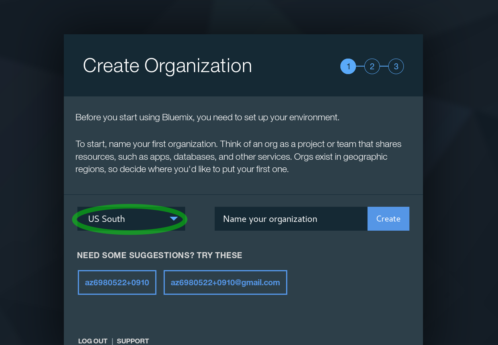
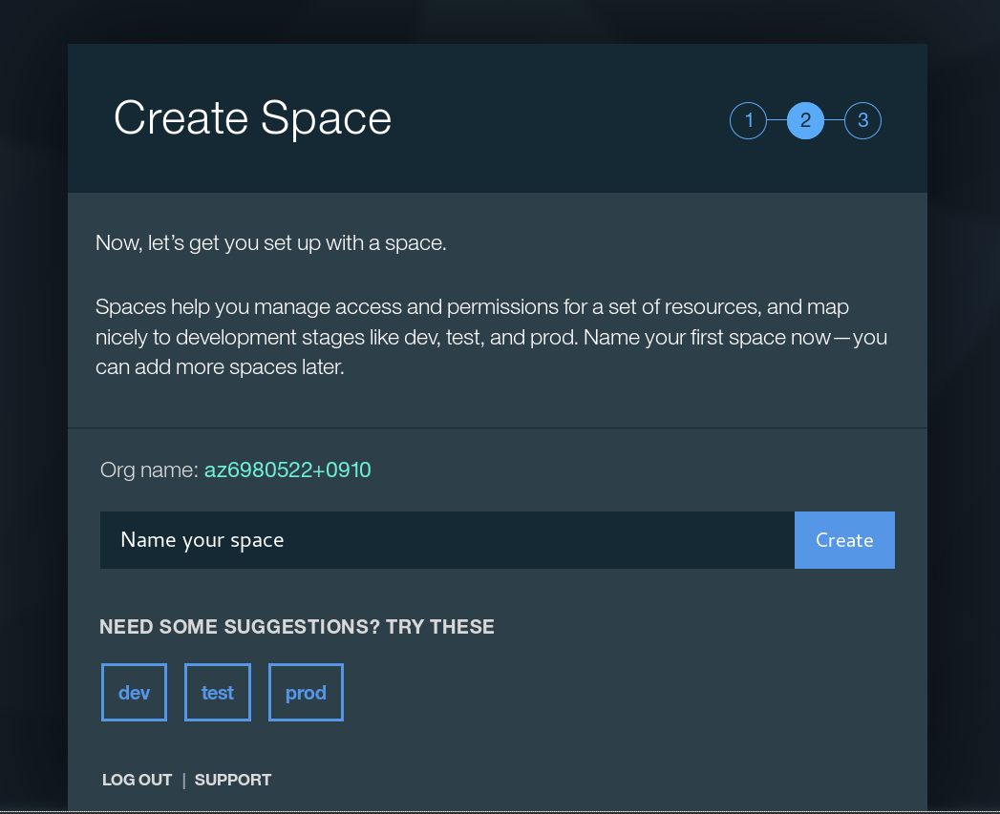
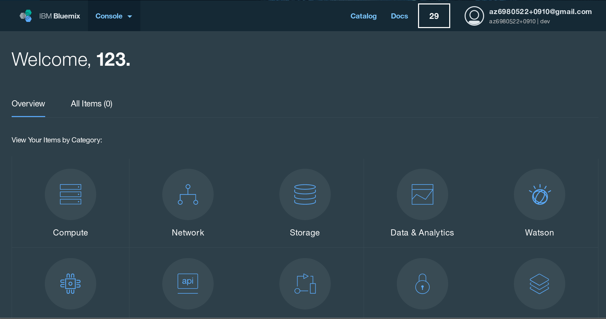
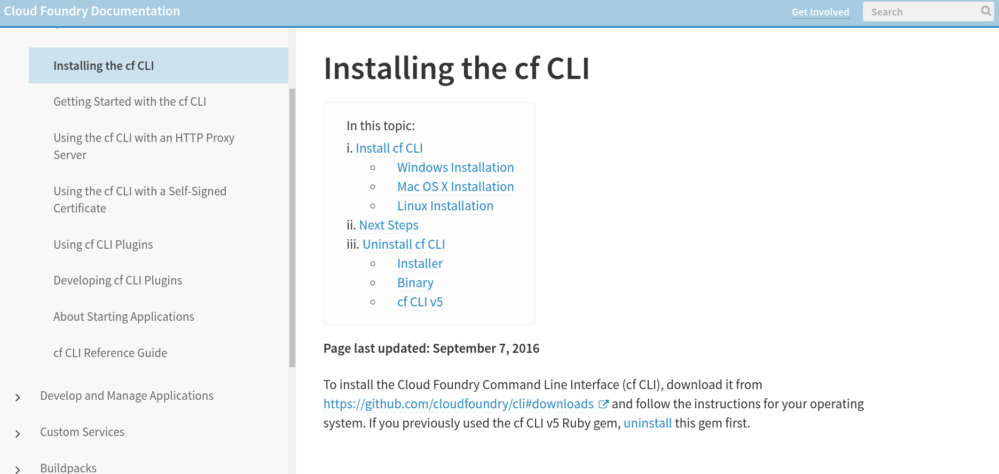

IBM Bluemix Setup
Create a IBM Bluemix account
Sign up a new account.
https://new-console.ng.bluemix.net/docs/overview/index.html

Fill in the all blocks and click create account. 
Check your email and confirm it. 
After log in, you need to create a organization and space first.
Note that you need choose the region to US South.  
Then you log in to the console successfully. 
Install Cloud Foundary
Just download the required package and follow the steps to install it.
Official setup supports windows, mac os x, linux(Debian/Ubuntu, Red Hat), both 32/64 bit architecture are supported.
https://docs.cloudfoundry.org/cf-cli/install-go-cli.html

For Arch linux users, you may install it directly from AUR.
yaourt -S cloudfoundry-cliNow you can launch a terminal, and login the Bluemix API with cf cli.
(Command Prompt in Windows, or you can use PowerShell if you have it.)
cf login -a https://api.ng.bluemix.netType in your email and password of the Bluemix account, and it will automatically target to org and space, which have been set in Web UI.
API endpoint: https://api.ng.bluemix.net
Email>
Password>
Authenticating...
OK
Targeted org az6980522+0910
Targeted space dev
API endpoint: https://api.ng.bluemix.net (API version: 2.54.0)
User: az6980522+0910@gmail.com
Org: az6980522+0910
Space: devReference
- Node.js SDK of Watson-developer-cloud https://github.com/watson-developer-cloud/node-sdk